Open to AI product roles · Technical project management
I build working AI tools by directing coding agents.
15 AI projects, each shipped with a measured result and the check that proved it. Start with these three. ryanwisth@gmail.com

Products
A 3D family tree in one offline file
A 3D family tree, a migration map, lineage and statistics views in a single web page you open from disk.
I set One file, opened from disk · a layout that stays readable at size · safe to share
Read the case →
Local AI and devices
AI feedback written in ink, and a colour e-ink display decoded safely
On one reMarkable Paper Pro: an AI model reviews handwritten work and writes its feedback back as real pen strokes, and research worked out how the tablet drives its colour e-ink panel.
I set Never touch the student’s ink · button-triggered only · read-only before write
Read the case →
Products · in daily use
My desktop coding-agent chats, answered from my phone
A web page served from my Mac over my private Tailscale network: my desktop Claude Code chats on my iPhone, where a reply continues the same chat.
I set My own build, on a network I control · show the chats I already have · a reply continues the same chat
Read the case →12 more case studies
Products
Trust in AI output
- Making AI work checkable517 AI-written claims checked and logged
- A family tree grown only from recordsSkeptic agents caught 31 bad claims before they entered the tree
- Turning a slipping process into enforced rulesProblem rate cut from 27% to 7%
- A study built so it could fail9 predictions locked in advance, tested on 94 real tables
Cost and guardrails
How each one is built
I set
the goalthe specthe acceptance checks
Agents write
most of the code
I verify
before it counts as done